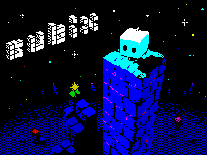
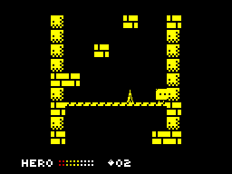

Cubix


{kind=link}

| Created by: | Sergei Andreevich, Art-Top, UriS, Eugene Rogulin |
| Price: | Free |
| Year: | 2025 |
Cubix is a pioneering 3D platformer for the ZX Spectrum, set in the distant geometric universe of Cubix. This world, composed of perfect cubes, is governed by symmetry and harmony. Towering structures reach into the sky, and cities shine with vibrant facets. At the heart of this universe lies the Sacred Talisman, a magical die symbolizing balance and order.

One day, the peace of Cubix is shattered by Hexatron, a mysterious villain from the Shadow Dimension. Hexatron, the lord of chaos, despises the perfection of the Cubics and seeks to disrupt their harmony. He steals the Sacred Talisman, splitting it into six pieces and hiding them atop Great Towers filled with traps and puzzles.
The protagonist, Bix, is an ordinary Cubic who escapes the curse and decides to challenge fate. Bix must climb each tower, overcome treacherous trials, collect the Talisman fragments, and restore order to the world. The game combines platformer and puzzle elements with metroidvania features, allowing for nonlinear progression.
With six distinct towers, over ten unique game mechanics, and various cute enemies, Cubix offers a rich gaming experience. As players progress, they unlock new abilities, enhancing their journey through increasingly complex puzzles. Developed by Gogin, Cubix features a revolutionary 3D engine, a captivating storyline, and engaging gameplay.